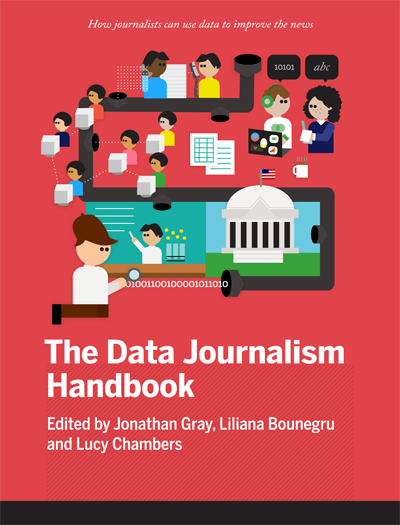

<div class="row">
    <div class='span6'>
        
        
        
        
            <h2><a href='0_front_matter.html'>0. Front Matter</a></h2>
            <ul class='toc'>
                
                    <li><a href="0_front_matter_0.html">For the Great Unnamed</a></li>
                
                    <li><a href="0_front_matter_1.html">Contributor List</a></li>
                
                    <li><a href="0_front_matter_2.html">What This Book Is </a></li>
                
                    <li><a href="0_front_matter_3.html">The Handbook At A Glance</a></li>
                
            </ul>
        
        
        
        
        
        
        
        
        
        
        
            <h2><a href='1_introduction.html'>1. Introduction</a></h2>
            <ul class='toc'>
                
                    <li><a href="1_introduction_0.html">What Is Data Journalism? </a></li>
                
                    <li><a href="1_introduction_1.html">Why Journalists Should Use Data </a></li>
                
                    <li><a href="1_introduction_2.html">Why Is Data Journalism Important? </a></li>
                
                    <li><a href="1_introduction_3.html">Some Favourite Examples </a></li>
                
                    <li><a href="1_introduction_4.html">Data Journalism in Perspective </a></li>
                
            </ul>
        
        
        
        
        
        
        
        
        
        
        
        
        
            <h2><a href='2_in_the_newsroom.html'>2. In The Newsroom</a></h2>
            <ul class='toc'>
                
                    <li><a href="2_in_the_newsroom_0.html">The ABC’s Data Journalism Play </a></li>
                
                    <li><a href="2_in_the_newsroom_1.html">Data Journalism at the BBC </a></li>
                
                    <li><a href="2_in_the_newsroom_2.html">How the News Apps Team at Chicago Tribune Works </a></li>
                
                    <li><a href="2_in_the_newsroom_3.html">Behind the Scenes at the Guardian Datablog </a></li>
                
                    <li><a href="2_in_the_newsroom_4.html">Data Journalism at the Zeit Online </a></li>
                
                    <li><a href="2_in_the_newsroom_5.html">How to Hire a Hacker </a></li>
                
                    <li><a href="2_in_the_newsroom_6.html">Harnessing External Expertise Through Hackthons </a></li>
                
                    <li><a href="2_in_the_newsroom_7.html">Following the Money: Data Journalism and Cross-Border Collaboration </a></li>
                
                    <li><a href="2_in_the_newsroom_8.html">Our Stories Come As Code </a></li>
                
                    <li><a href="2_in_the_newsroom_9.html">Kaas & Mulvad: Semi-finished Content for Stakeholder Groups </a></li>
                
                    <li><a href="2_in_the_newsroom_10.html">Business Models for Data Journalism </a></li>
                
            </ul>
        
        
        
        
        
        
        
        
        
        
        
        
        
        
        
        
        
        
        
        
        
        
        
        
        
            <h2><a href='3_case_studies.html'>3. Case studies</a></h2>
            <ul class='toc'>
                
                    <li><a href="3_case_studies_0.html">The Opportunity Gap </a></li>
                
                    <li><a href="3_case_studies_1.html">A 9 Month Investigation into European Structural Funds </a></li>
                
                    <li><a href="3_case_studies_2.html">The Eurozone Meltdown </a></li>
                
                    <li><a href="3_case_studies_3.html">Covering the Public Purse with OpenSpending.org </a></li>
                
                    <li><a href="3_case_studies_4.html">Finnish Parliamentary Elections and Campaign Funding </a></li>
                
                    <li><a href="3_case_studies_5.html">Electoral Hack in Realtime </a></li>
                
                    <li><a href="3_case_studies_6.html">Data in the News: Wikileaks </a></li>
                
                    <li><a href="3_case_studies_7.html">Mapa76 Hackathon </a></li>
                
                    <li><a href="3_case_studies_8.html">The Guardian Datablog’s Coverage of the UK Riots </a></li>
                
                    <li><a href="3_case_studies_9.html">Illinois School Report Cards </a></li>
                
                    <li><a href="3_case_studies_10.html">Hospital Billing </a></li>
                
                    <li><a href="3_case_studies_11.html">Care Home Crisis </a></li>
                
                    <li><a href="3_case_studies_12.html">The Tell-All Telephone </a></li>
                
                    <li><a href="3_case_studies_13.html">Which Car Model? MOT Failure Rates </a></li>
                
                    <li><a href="3_case_studies_14.html">Bus Subsidies in Argentina </a></li>
                
                    <li><a href="3_case_studies_15.html">Citizen Data Reporters </a></li>
                
                    <li><a href="3_case_studies_16.html">The “Big Board” for Election Results </a></li>
                
                    <li><a href="3_case_studies_17.html">Crowdsourcing the Price of Water </a></li>
                
            </ul>
        
        
        
        
        
        
        
        
        
        
        
        
        
        
        
        
        
        
        
        
        
        
        
        
        
        
        
        
        
        
        
        
        
        
        
        
        
        
        
            <h2><a href='4_getting_data.html'>4. Getting Data</a></h2>
            <ul class='toc'>
                
                    <li><a href="4_getting_data_0.html">A Five Minute Field Guide </a></li>
                
                    <li><a href="4_getting_data_1.html">Your Right to Data </a></li>
                
                    <li><a href="4_getting_data_2.html">Wobbing Works. Use it! </a></li>
                
                    <li><a href="4_getting_data_3.html">Getting Data from the Web </a></li>
                
                    <li><a href="4_getting_data_4.html">The Web as a Data Source </a></li>
                
                    <li><a href="4_getting_data_5.html">Crowdsourcing Data at the Guardian Datablog </a></li>
                
                    <li><a href="4_getting_data_6.html">Using and Sharing Data: the Black Letter, Fine Print, and Reality </a></li>
                
                    <li><a href="4_getting_data_7.html">Anecdotes and War Stories </a></li>
                
            </ul>
        
        
        
        
        
        
        
        
        
        
        
        
        
        
        
        
        
        
        
            <h2><a href='5_understanding_data.html'>5. Understanding data</a></h2>
            <ul class='toc'>
                
                    <li><a href="5_understanding_data_0.html">Become Data Literate in 3 Simple Steps </a></li>
                
                    <li><a href="5_understanding_data_1.html">Tips for Working with Numbers in the News </a></li>
                
                    <li><a href="5_understanding_data_2.html">Basic Steps in Working with Data </a></li>
                
                    <li><a href="5_understanding_data_3.html">The £32 Loaf of Bread </a></li>
                
                    <li><a href="5_understanding_data_4.html">Start With the Data, Finish With a Story </a></li>
                
                    <li><a href="5_understanding_data_5.html">Data Stories </a></li>
                
                    <li><a href="5_understanding_data_6.html">Data Journalists Discuss Their Tools of Choice </a></li>
                
                    <li><a href="5_understanding_data_7.html">Using Data Visualisation to Find Insights in Data </a></li>
                
            </ul>
        
        
        
        
        
        
        
        
        
        
        
        
        
        
        
        
        
        
        
            <h2><a href='6_delivering_data.html'>6. Delivering data</a></h2>
            <ul class='toc'>
                
                    <li><a href="6_delivering_data_0.html">Presenting Data to the Public </a></li>
                
                    <li><a href="6_delivering_data_1.html">How to Build a News App </a></li>
                
                    <li><a href="6_delivering_data_2.html">News Apps at ProPublica </a></li>
                
                    <li><a href="6_delivering_data_3.html">Visualisation as the Workhorse of Data Journalism </a></li>
                
                    <li><a href="6_delivering_data_4.html">Using Visualisations to Tell Stories </a></li>
                
                    <li><a href="6_delivering_data_5.html">Designing With Data </a></li>
                
                    <li><a href="6_delivering_data_6.html">Different Charts Tell Different Tales </a></li>
                
                    <li><a href="6_delivering_data_7.html">Data visualisation DIY: Our Top Tools </a></li>
                
                    <li><a href="6_delivering_data_8.html">How We Serve Data at Verdens Gang </a></li>
                
                    <li><a href="6_delivering_data_9.html">Public Data Goes Social </a></li>
                
                    <li><a href="6_delivering_data_10.html">Engaging People Around Your Data </a></li>
                
            </ul>
        
        
        
        
        
        
        
        
        
        
        
        
        
        
        
        
        
        
        
        
        
        
        
        
    </div>
    <div class='span6'>
        <div class='well'>
            
        </div>
    </div>
</div>
